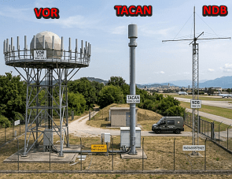
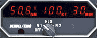
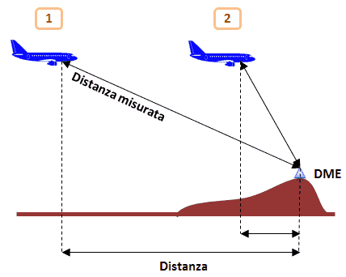
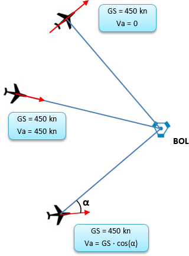

Quest'immagine di fantasia mostra un esempio di radioassistenze coubicate.
LINER NATO MiG
VOR a --- ---
DME d d ---
NDB a a a
TACAN d a,d ---
Liner: aerei civili di linea;| Aereo | TACAN | NDB | VOR | Note |
| TF-104G | | | | |
| F-104S | | | | |
| MiG-23MS | | | | Sembra possibile la ricezione di 2 NDB contemporaneamente |
| F-15A Eagle | | | | |
| F-4C Phantom II | | | | |
| F-4G Wild Weasel | | | |

Questo è un esempio di uno strumentino che veniva montato nei modelli molto vecchi di DC-9.
Quando l'aereo è in posizione 1, la "Distanza misurata" (chiamata "slant range", distanza obliqua) è di poco superiore a quella reale, indicata con "Distanza", quindi l'errore sui tre valori visualizzati dallo strumento (distanza, velocità e tempo) è piccolo (la "Distanza misurata" è l'ipotenusa del triangolo rettangolo i cui cateti sono la quota dell'aereo e la distanza al suolo dal DME).
La figura mostra i due casi limite in cui la velocità verso il DME (Va) è nulla e in cui è pari alla velocità al suolo (GS, "ground speed") dell'aereo (sempre, però, tenendo conto di quanto visto nella figura precedente).